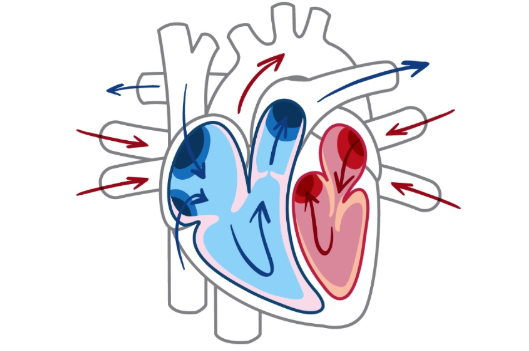
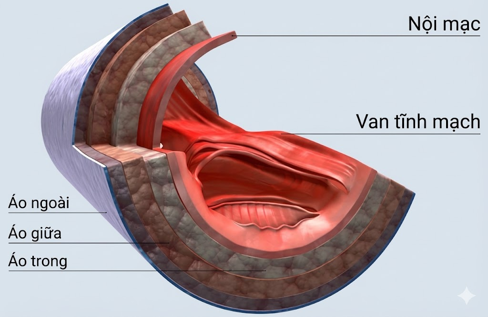

Tổng Quan
Hệ tuần hoàn là hệ thống vận chuyển máu đi khắp cơ thể, cung cấp oxy và chất dinh dưỡng đến các tế bào, đồng thời loại bỏ chất thải. Hệ thống này bao gồm tim, mạch máu và máu.
Các Cơ Quan Chính
Tim
Bơm máu liên tục đến toàn bộ cơ thể. Tim có 4 buồng: tâm nhĩ trái, tâm nhĩ phải, tâm thất trái, tâm thất phải.
Chức năng: Bơm máu giàu oxy đến cơ thể và đưa máu nghèo oxy về phổi.
Động Mạch

Các mạch máu dẫn máu giàu oxy từ tim đến các cơ quan. Thành động mạch dày và đàn hồi tốt.
Chức năng: Vận chuyển máu giàu oxy từ tim đến các mô trong cơ thể.
Tĩnh Mạch
Các mạch máu đưa máu nghèo oxy từ các cơ quan về tim. Có van ngăn máu chảy ngược.
Chức năng: Đưa máu nghèo oxy từ các mô trở về tim.
Mao Mạch

Các mạch máu nhỏ nhất, nối giữa động mạch và tĩnh mạch. Nơi diễn ra trao đổi chất với tế bào.
Chức năng: Trao đổi oxy, chất dinh dưỡng và chất thải với các tế bào.
Quá Trình Tuần Hoàn Máu
1
Tim bơm máu
2
Máu đi qua động mạch
3
Trao đổi tại mao mạch
4
Máu về qua tĩnh mạch
5
Trở lại tim
Thông Tin Thú Vị
- Trung bình, tim đập khoảng 100.000 lần mỗi ngày
- Tổng chiều dài mạch máu trong cơ thể người lên tới 100.000 km
- Máu di chuyển với tốc độ khoảng 5 km/h trong động mạch
- Tim bơm khoảng 7.500 lít máu mỗi ngày
- Bệnh tim mạch là nguyên nhân gây tử vong hàng đầu